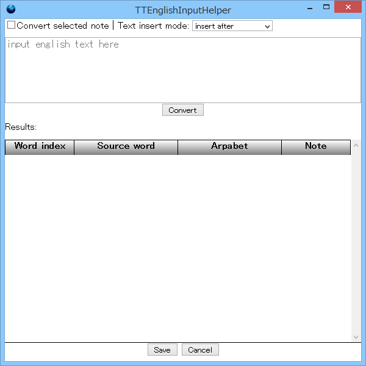
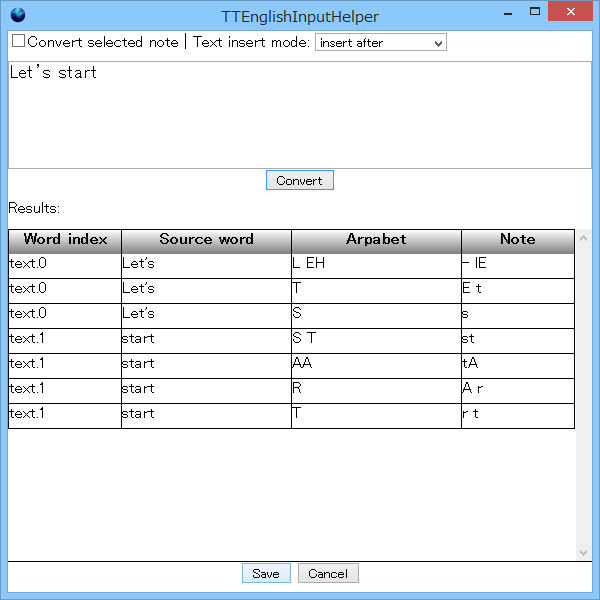
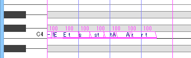
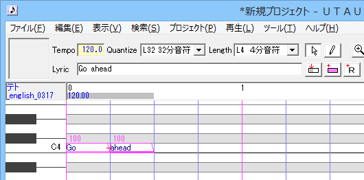
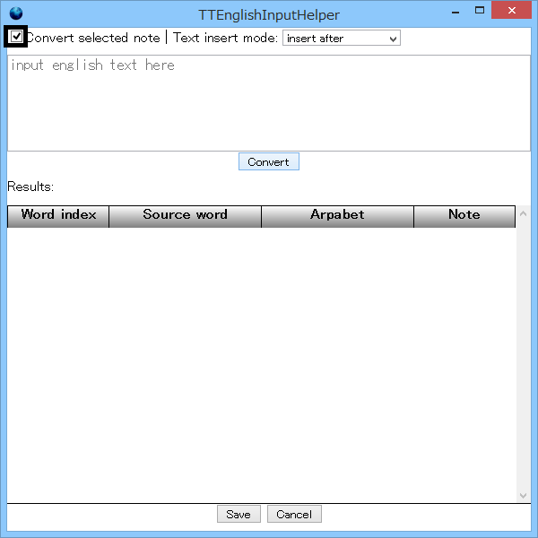
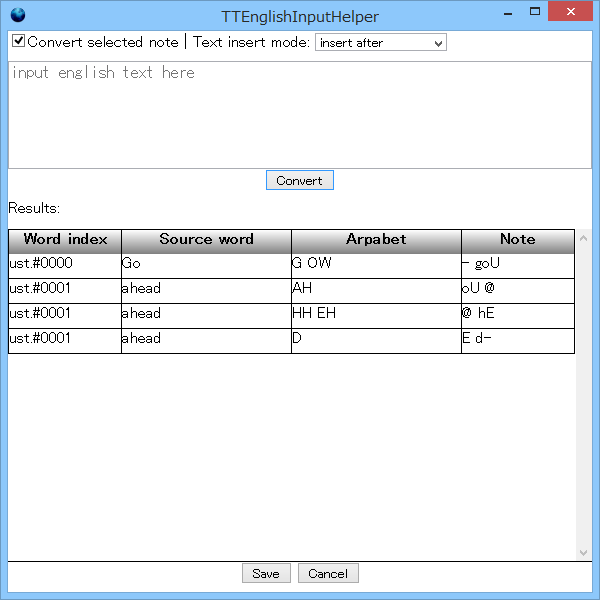
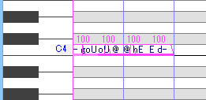
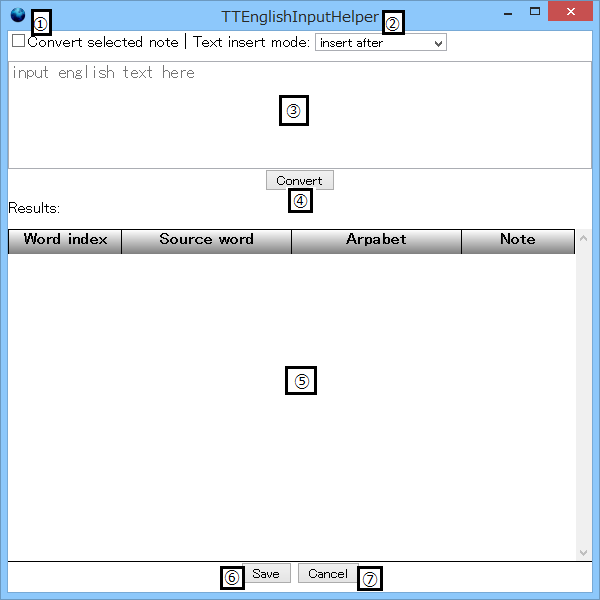
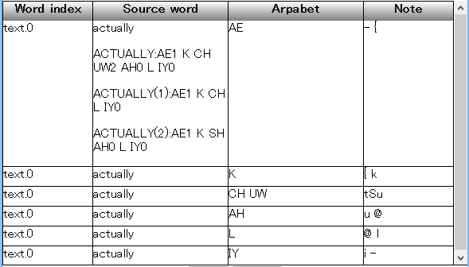

英語入力補助プラグイン TTEnglishInputHelper とは、 英語の歌詞を、当プラグインが対応する UTAU 向け音声ライブラリー（現時点ではテト英語音源のみ）の音名のノートに変換する UTAU 用プラグインです。
内臓の辞書にある単語なら、音名に変換することができるので、 UTAU での英語の歌詞の入力にある程度の助けになるでしょう。
次のボタン状のリンクからダウンロードできます。
※現在のバージョンは、ベータ版で、まだ、動作が不安定ですのでご注意ください！
TTEnglishInputHelper-v0.3.0.zip (Beta) (Published on 2015/04/13) Download
UTAUを起動して、ダウンロードしたzipファイルをUTAUのウィンドウにドラッグ&ドロップしてください。
ちなみに、バージョンごとにプラグインのフォルダを分けるようにしているため、今後のバージョンアップで新しいバージョンをインストールするたびにプラグインが増えてしまいますので、適宜、アンインストールしていただければと思います。
アンインストールする前に、当プラグインとUTAUを終了します。
また、エクスプローラーの「表示」の「隠しファイル」にチェックを入れて隠しファイルが表示されるようにしておいた方がよいでしょう。
Vista以降のWindowsならば、 C:\Users\<ユーザー名>\AppData\Roaming\UTAU\plugins\ の中に TTEnglishInputHelper-<バージョン> のフォルダができていますので、それを削除してください。
TTEnglishInputHelper の使い方は、大きく分けると2通りあります。
1つ目は、プラグイン内で歌詞を入力する使い方です。
2つ目は、 UTAU のノートに入力した英単語を変換する使い方です。
UTAUのメニューバーの「プロジェクト」→「プロジェクトのプロパティ」で、 「原音ファイルセット」を「重音テト英語音声ライブラリー」に設定してください。
UTAU でノートを何も選んでいない状態で、 UTAUのメニューバーの「ツール」→「プラグイン」→「TTEnglishInputHelper-<バージョン番号>」で起動してください。
プラグインが起動すると、次のような画面が表示されます（画面の詳しい説明は後述します）。

上の方の「input english text here」と書かれているテキストボックスに、 例えば「Let's start」と入力し、テキストボックスの下の「Convert」ボタンをクリックしてみましょう。

すると上の図のように、変換した結果が下の表に出力されます。
ここで、一番下の「Save」ボタンをクリックしてください。下図のように UTAU に入力されます。

この状態で再生ボタンを押すと、間延びしていておかしいですが、なんとなく、入力した英単語の通りに声が出ていると思います。 ここからは、 UTAU 上でちゃんと歌うようにパラメータを修正したり、必要なノートを挿入したりしていってください。
最も簡単な使い方は、以上になります。
※現時点では、UTAU上で入力した物の変換機能については、以下の点があり、不十分かも知れません。
UTAUのメニューバーの「プロジェクト」→「プロジェクトのプロパティ」で、 「原音ファイルセット」を「重音テト英語音声ライブラリー」に設定してください。
UTAU で、例えば、Lyricの欄に「Go ahead」と入力して「歌詞で挿入」ボタン（ピンクの長方形のアイコンのボタン）をクリックするなどして、 下図のように1つのノートに1単語が入るように入力してください。

UTAUのメニューバーの「ツール」→「プラグイン」→「TTEnglishInputHelper-<バージョン番号>」で起動してください。
プラグインが起動したら、下図の黒い太枠のように「Convert selected note」にチェックを入れてください。

この状態で、テキストボックスの下の「Convert」ボタンをクリックしてみましょう。

すると上の図のように、変換した結果が下の表に出力されます。
ここで、一番下の「Save」ボタンをクリックしてください。下図のように UTAU に入力されます。

ノートが、変換後の物に置き換えられている事が分かると思います。
この状態で再生ボタンを押すと、間延びしていておかしいですが、なんとなく、入力した英単語の通りに声が出ていると思います。 ここからは、 UTAU 上でちゃんと歌うようにパラメータを修正したり、必要なノートを挿入したりしていってください。
2つ目の使い方は、以上になります。
上記の2つの使い方は、組み合わせることができます。詳しくは、後述の画面説明をご参照ください。
暫定版のPresamp向け出力機能は、一旦、「Convert」ボタンで変換した後に、 一番下の「for Presamp」ボタンをクリックすることで使えます。 画面説明もご参照ください。
※UTAU上での入力を変換した場合は、音階や長さも含めたノートのすべてのプロパティが消えてデフォルトになります。
当プラグインの画面は下のようになります。

このチェックボックスがチェックされていると、このプラグインの起動時に選択されていたノートを変換して、置き換えます。
次のテキストボックスに入力したテキストについて、変換するかしないかや、 変換したノートを挿入する位置について、次のいずれかを選択します。
ここに英語のテキストを入力します。
現時点では、大文字小文字を区別しません。
シングルクォーテーション「'」は、アポストロフィとして、アルファベットと同様に扱います。
数字を丸かっこ「()」で括って、英単語の後ろに「English(1)」などと付けると、同じ単語に複数の発音があった場合に、デフォルト以外の発音を選択することができます。
このボタンをクリックすることで、入力されたテキストや、選択されたノートから変換して、下記の表に結果を表示します。
ここに変換結果が表示されます。４つある列の意味は次の通りです。

このボタンをクリックすることで、⑤の「Result」テーブルに表示された変換結果がUTAU側に反映されます。 ④の「Convert」ボタンをクリックしてから、このボタンをクリックしてください。
このボタンをクリックすることで、⑤の「Result」テーブルに表示された変換結果がUTAU側に反映されます（プラグインは終了します）。 ④の「Convert」ボタンをクリックしてから、このボタンをクリックしてください。
このボタンをクリックすると、Presamp向け出力編集モードになります。次節をご参照ください。
何もせずにプラグインを終了して、UTAUに戻ります。右上の「×」をクリックしても同じです。
Presamp向け出力編集モードの画面は下のようになります。
ここにはデフォルトで、変換結果をさらにPresamp向けに加工して、スペース区切りにしたものが入ります。 何となく、音節ごとの発音記号が入っている様になっているかと思いますが、おかしい所があるだろうと思いますので、手作業で直してください。
このボタンをクリックすることで、(A)スペース区切り音節発音記号入力欄のテキストを スペースで分割した物をノートとしてUTAU側に反映されます（プラグインは終了します）。
Presamp向け出力編集モードを終えて、通常モードに戻ります（プラグインは終了しません）。
ご意見・ご感想など何かありましたら、ツイッター上でハッシュタグ #tteih で。
あさくら・ふにょし （英語ができません）
Twitter: hunyosi